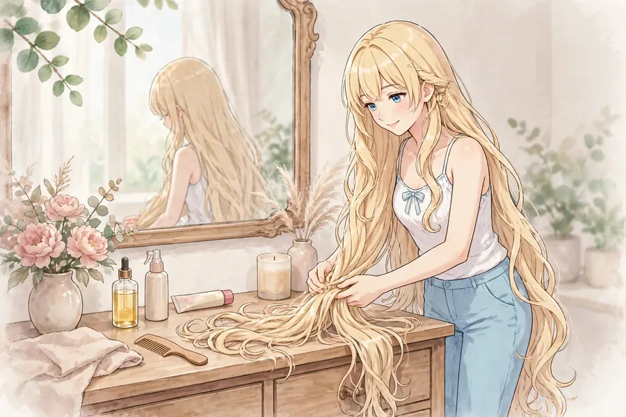

アウトバスアイテムの種類と重ね方

洗い流さないタイプのヘアケアアイテム（アウトバストリートメント）は、オイル、ミルク、クリーム、ミストなど形がさまざまです。複数持っていると「どれをどの順番で使うのか」で迷います。この記事では、種類の見分け方と重ね方の基本を整理します。
種類は、形状と「つけ方」の表示で見分ける
形状ごとの大まかな違いは、広がり方と残り方です。ミストは軽く広がり、ミルクやクリームは中間の質感、オイルは少量でしっとりした感触が残りやすい傾向があります。商品の表示には「毛先を中心に」「乾いた髪にも使えます」といったつけ方の案内があるので、まずそれを確認します。濡れた髪に使うのか、乾いた髪に使うのかで、置くタイミングが変わります。
香りの強さも形状で感じ方が変わります。選ぶときは、量の目安表示（プッシュ数や粒の大きさの例え）もあわせて見ておくと、自分の髪の長さでどれくらい持つかが計算できます。
重ねる順番は、軽いものから
複数のアイテムを重ねる場合の基本は、スキンケアと同じく「軽いものから重いものへ」です。ミストやミルクのような軽い質感を先に、オイルのような残る質感を後に。逆の順番にすると、後のものが広がりにくく、むらになりやすくなります。ただし、商品に指定の順番がある場合は、その案内が優先です。
重ねる量は、それぞれ表示の目安より少なめから始めるのが無難です。合計の量が増える分、1品ずつの量を調整します。
つける場所は、毛先と中間が中心
つける場所は、毛先と中間が中心で、根元や頭皮に直接つける使い方は、商品の表示で案内されている場合を除き、避けるのが一般的です。手のひらに伸ばしてから、毛先を握るようにしてなじませ、中間へ広げます。手に残った分で表面を整えると、つけすぎを防げます。
種類、順番、場所。この3つを決めておくと、アウトバスのアイテムは増えても迷わずに使い分けられます。
乾いた髪に使う場合についても触れておきます。朝のスタイリング前に使う場合は、量をさらに少なめにするのが基本です。濡れた髪より広がりにくいため、つけすぎると重い感触になりやすくなります。手のひらでよく伸ばしてから、表面ではなく内側と毛先に運ぶのがコツです。また、アウトバスのアイテムは使う量が少ない分、1本が長く持ちます。開封した日付をボトルに書いておくと、使い切る時期の見通しが立ちます。複数のアイテムを持っている場合は、朝用と夜用に分けるなど、置き場所で役割を分けると、重ね方の迷いが減ります。

セラフィナ「重ね方は軽いものから、場所は毛先と中間。量は少なめから調整だね」

セラフィナ｜美容の道具箱の案内役
「量と表示が分かれば、美容は失敗しない。」——セラフィナと白猫のモコが、買う前のチェックポイントを案内します。綺麗になりたい気持ちに正直に、でも表示は冷静に読むのが、このサイトの約束です。